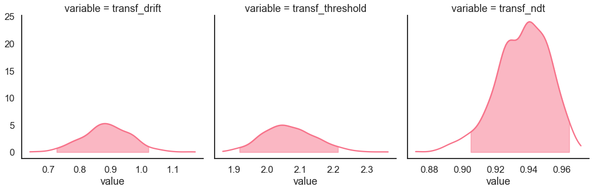
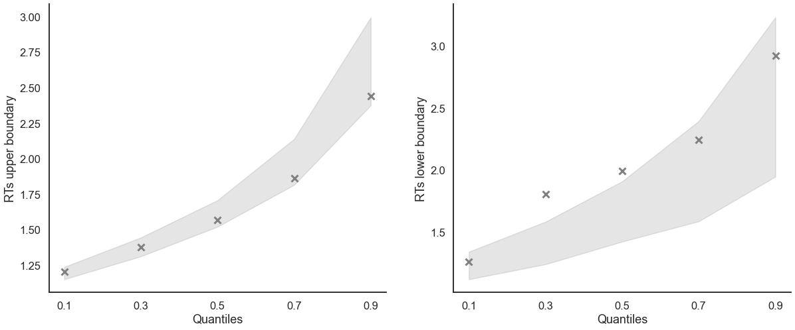

Fit the DDM on individual data
[1]:
import pandas as pd
from rlssm.model.models_DDM import DDModel
from rlssm.utility.load_data import load_example_dataset
Import the data
[2]:
data = load_example_dataset(hierarchical_levels = 1)
data.head()
[2]:
| participant | block_label | trial_block | f_cor | f_inc | cor_option | inc_option | times_seen | rt | accuracy | |
|---|---|---|---|---|---|---|---|---|---|---|
| 0 | 21 | 1 | 1 | 39 | 38 | 2 | 1 | 1 | 1.193522 | 0 |
| 1 | 21 | 1 | 2 | 55 | 38 | 4 | 2 | 1 | 1.344920 | 0 |
| 2 | 21 | 1 | 3 | 52 | 55 | 4 | 3 | 1 | 1.032342 | 1 |
| 3 | 21 | 1 | 4 | 64 | 49 | 4 | 3 | 2 | 1.201309 | 0 |
| 4 | 21 | 1 | 5 | 48 | 49 | 4 | 3 | 3 | 1.163588 | 1 |
Initialize the model
[3]:
model = DDModel(hierarchical_levels = 1)
14:02:05 - cmdstanpy - INFO - compiling stan file /home/andrei/PycharmProjects/rlssm/rlssm/stan_models/DDM/DDM.stan to exe file /home/andrei/PycharmProjects/rlssm/rlssm/stan_models/DDM/DDM
14:02:14 - cmdstanpy - INFO - compiled model executable: /home/andrei/PycharmProjects/rlssm/rlssm/stan_models/DDM/DDM
14:02:14 - cmdstanpy - WARNING - Stan compiler has produced 6 warnings:
14:02:14 - cmdstanpy - WARNING -
--- Translating Stan model to C++ code ---
bin/stanc --o=/home/andrei/PycharmProjects/rlssm/rlssm/stan_models/DDM/DDM.hpp /home/andrei/PycharmProjects/rlssm/rlssm/stan_models/DDM/DDM.stan
Warning in '/home/andrei/PycharmProjects/rlssm/rlssm/stan_models/DDM/DDM.stan', line 4, column 1: Declaration
of arrays by placing brackets after a variable name is deprecated and
will be removed in Stan 2.32.0. Instead use the array keyword before the
type. This can be changed automatically using the auto-format flag to
stanc
Warning in '/home/andrei/PycharmProjects/rlssm/rlssm/stan_models/DDM/DDM.stan', line 5, column 1: Declaration
of arrays by placing brackets after a variable name is deprecated and
will be removed in Stan 2.32.0. Instead use the array keyword before the
type. This can be changed automatically using the auto-format flag to
stanc
Warning in '/home/andrei/PycharmProjects/rlssm/rlssm/stan_models/DDM/DDM.stan', line 18, column 1: Declaration
of arrays by placing brackets after a variable name is deprecated and
will be removed in Stan 2.32.0. Instead use the array keyword before the
type. This can be changed automatically using the auto-format flag to
stanc
Warning in '/home/andrei/PycharmProjects/rlssm/rlssm/stan_models/DDM/DDM.stan', line 19, column 1: Declaration
of arrays by placing brackets after a variable name is deprecated and
will be removed in Stan 2.32.0. Instead use the array keyword before the
type. This can be changed automatically using the auto-format flag to
stanc
Warning in '/home/andrei/PycharmProjects/rlssm/rlssm/stan_models/DDM/DDM.stan', line 20, column 1: Declaration
of arrays by placing brackets after a variable name is deprecated and
will be removed in Stan 2.32.0. Instead use the array keyword before the
type. This can be changed automatically using the auto-format flag to
stanc
Warning in '/home/andrei/PycharmProjects/rlssm/rlssm/stan_models/DDM/DDM.stan', line 21, column 1: Declaration
of arrays by placing brackets after a variable name is deprecated and
will be removed in Stan 2.32.0. Instead use the array keyword before the
type. This can be changed automatically using the auto-format flag to
stanc
--- Compiling, linking C++ code ---
g++ -std=c++1y -pthread -D_REENTRANT -Wno-sign-compare -Wno-ignored-attributes -I stan/lib/stan_math/lib/tbb_2020.3/include -O3 -I src -I stan/src -I lib/rapidjson_1.1.0/ -I lib/CLI11-1.9.1/ -I stan/lib/stan_math/ -I stan/lib/stan_math/lib/eigen_3.3.9 -I stan/lib/stan_math/lib/boost_1.78.0 -I stan/lib/stan_math/lib/sundials_6.1.1/include -I stan/lib/stan_math/lib/sundials_6.1.1/src/sundials -DBOOST_DISABLE_ASSERTS -c -Wno-ignored-attributes -x c++ -o /home/andrei/PycharmProjects/rlssm/rlssm/stan_models/DDM/DDM.o /home/andrei/PycharmProjects/rlssm/rlssm/stan_models/DDM/DDM.hpp
g++ -std=c++1y -pthread -D_REENTRANT -Wno-sign-compare -Wno-ignored-attributes -I stan/lib/stan_math/lib/tbb_2020.3/include -O3 -I src -I stan/src -I lib/rapidjson_1.1.0/ -I lib/CLI11-1.9.1/ -I stan/lib/stan_math/ -I stan/lib/stan_math/lib/eigen_3.3.9 -I stan/lib/stan_math/lib/boost_1.78.0 -I stan/lib/stan_math/lib/sundials_6.1.1/include -I stan/lib/stan_math/lib/sundials_6.1.1/src/sundials -DBOOST_DISABLE_ASSERTS -Wl,-L,"/home/andrei/.cmdstan/cmdstan-2.30.0/stan/lib/stan_math/lib/tbb" -Wl,-rpath,"/home/andrei/.cmdstan/cmdstan-2.30.0/stan/lib/stan_math/lib/tbb" /home/andrei/PycharmProjects/rlssm/rlssm/stan_models/DDM/DDM.o src/cmdstan/main.o -Wl,-L,"/home/andrei/.cmdstan/cmdstan-2.30.0/stan/lib/stan_math/lib/tbb" -Wl,-rpath,"/home/andrei/.cmdstan/cmdstan-2.30.0/stan/lib/stan_math/lib/tbb" stan/lib/stan_math/lib/sundials_6.1.1/lib/libsundials_nvecserial.a stan/lib/stan_math/lib/sundials_6.1.1/lib/libsundials_cvodes.a stan/lib/stan_math/lib/sundials_6.1.1/lib/libsundials_idas.a stan/lib/stan_math/lib/sundials_6.1.1/lib/libsundials_kinsol.a stan/lib/stan_math/lib/tbb/libtbb.so.2 -o /home/andrei/PycharmProjects/rlssm/rlssm/stan_models/DDM/DDM
rm -f /home/andrei/PycharmProjects/rlssm/rlssm/stan_models/DDM/DDM.o
Fit
[4]:
# sampling parameters
n_warmup = 500
n_sampling = 500
n_chains = 2
n_thin = 1
[5]:
model_fit = model.fit(
data,
thin = n_thin,
iter_warmup=n_warmup,
iter_sampling=n_sampling,
chains = n_chains,
pointwise_waic=False)
14:02:14 - cmdstanpy - INFO - CmdStan start processing
Fitting the model using the priors:
drift_priors {'mu': 1, 'sd': 5}
threshold_priors {'mu': 0, 'sd': 5}
ndt_priors {'mu': 0, 'sd': 5}
14:02:17 - cmdstanpy - INFO - CmdStan done processing.
14:02:17 - cmdstanpy - WARNING - Non-fatal error during sampling:
Exception: wiener_lpdf: Boundary separation[1] is inf, but must be positive finite! (in '/home/andrei/PycharmProjects/rlssm/rlssm/stan_models/DDM/DDM.stan', line 43, column 1 to column 59)
Exception: wiener_lpdf: Boundary separation[1] is inf, but must be positive finite! (in '/home/andrei/PycharmProjects/rlssm/rlssm/stan_models/DDM/DDM.stan', line 43, column 1 to column 59)
Exception: wiener_lpdf: Boundary separation[1] is inf, but must be positive finite! (in '/home/andrei/PycharmProjects/rlssm/rlssm/stan_models/DDM/DDM.stan', line 43, column 1 to column 59)
Exception: wiener_lpdf: Random variable = 1.19352, but must be greater than nondecision time = 31.0012 (in '/home/andrei/PycharmProjects/rlssm/rlssm/stan_models/DDM/DDM.stan', line 43, column 1 to column 59)
Exception: wiener_lpdf: Random variable = 1.19352, but must be greater than nondecision time = 6.49707 (in '/home/andrei/PycharmProjects/rlssm/rlssm/stan_models/DDM/DDM.stan', line 43, column 1 to column 59)
Exception: wiener_lpdf: Boundary separation[1] is inf, but must be positive finite! (in '/home/andrei/PycharmProjects/rlssm/rlssm/stan_models/DDM/DDM.stan', line 43, column 1 to column 59)
Exception: wiener_lpdf: Boundary separation[1] is inf, but must be positive finite! (in '/home/andrei/PycharmProjects/rlssm/rlssm/stan_models/DDM/DDM.stan', line 43, column 1 to column 59)
Exception: wiener_lpdf: Random variable = 1.19352, but must be greater than nondecision time = 11.4973 (in '/home/andrei/PycharmProjects/rlssm/rlssm/stan_models/DDM/DDM.stan', line 43, column 1 to column 59)
Exception: wiener_lpdf: Random variable = 0.846314, but must be greater than nondecision time = 0.850744 (in '/home/andrei/PycharmProjects/rlssm/rlssm/stan_models/DDM/DDM.stan', line 43, column 1 to column 59)
Exception: wiener_lpdf: Random variable = 0.997185, but must be greater than nondecision time = 1.0312 (in '/home/andrei/PycharmProjects/rlssm/rlssm/stan_models/DDM/DDM.stan', line 43, column 1 to column 59)
Exception: wiener_lpdf: Random variable = 0.853511, but must be greater than nondecision time = 0.884317 (in '/home/andrei/PycharmProjects/rlssm/rlssm/stan_models/DDM/DDM.stan', line 43, column 1 to column 59)
Exception: wiener_lpdf: Random variable = 1.19352, but must be greater than nondecision time = 4.57205 (in '/home/andrei/PycharmProjects/rlssm/rlssm/stan_models/DDM/DDM.stan', line 43, column 1 to column 59)
Exception: wiener_lpdf: Random variable = 0.853511, but must be greater than nondecision time = 0.906532 (in '/home/andrei/PycharmProjects/rlssm/rlssm/stan_models/DDM/DDM.stan', line 43, column 1 to column 59)
Exception: wiener_lpdf: Boundary separation[1] is inf, but must be positive finite! (in '/home/andrei/PycharmProjects/rlssm/rlssm/stan_models/DDM/DDM.stan', line 43, column 1 to column 59)
Exception: wiener_lpdf: Boundary separation[1] is inf, but must be positive finite! (in '/home/andrei/PycharmProjects/rlssm/rlssm/stan_models/DDM/DDM.stan', line 43, column 1 to column 59)
Exception: wiener_lpdf: Random variable = 1.19352, but must be greater than nondecision time = 329.336 (in '/home/andrei/PycharmProjects/rlssm/rlssm/stan_models/DDM/DDM.stan', line 43, column 1 to column 59)
Exception: wiener_lpdf: Random variable = 1.19352, but must be greater than nondecision time = 82.3914 (in '/home/andrei/PycharmProjects/rlssm/rlssm/stan_models/DDM/DDM.stan', line 43, column 1 to column 59)
Exception: wiener_lpdf: Random variable = 1.19352, but must be greater than nondecision time = 20.4743 (in '/home/andrei/PycharmProjects/rlssm/rlssm/stan_models/DDM/DDM.stan', line 43, column 1 to column 59)
Exception: wiener_lpdf: Random variable = 1.19352, but must be greater than nondecision time = 5.37334 (in '/home/andrei/PycharmProjects/rlssm/rlssm/stan_models/DDM/DDM.stan', line 43, column 1 to column 59)
Exception: wiener_lpdf: Random variable = 1.19352, but must be greater than nondecision time = 1.61015 (in '/home/andrei/PycharmProjects/rlssm/rlssm/stan_models/DDM/DDM.stan', line 43, column 1 to column 59)
Exception: wiener_lpdf: Random variable = 0.91816, but must be greater than nondecision time = 0.931309 (in '/home/andrei/PycharmProjects/rlssm/rlssm/stan_models/DDM/DDM.stan', line 43, column 1 to column 59)
Exception: wiener_lpdf: Boundary separation[1] is inf, but must be positive finite! (in '/home/andrei/PycharmProjects/rlssm/rlssm/stan_models/DDM/DDM.stan', line 43, column 1 to column 59)
Exception: wiener_lpdf: Boundary separation[1] is inf, but must be positive finite! (in '/home/andrei/PycharmProjects/rlssm/rlssm/stan_models/DDM/DDM.stan', line 43, column 1 to column 59)
Exception: wiener_lpdf: Random variable = 1.19352, but must be greater than nondecision time = 63.6282 (in '/home/andrei/PycharmProjects/rlssm/rlssm/stan_models/DDM/DDM.stan', line 43, column 1 to column 59)
Exception: wiener_lpdf: Random variable = 0.997185, but must be greater than nondecision time = 1.01256 (in '/home/andrei/PycharmProjects/rlssm/rlssm/stan_models/DDM/DDM.stan', line 43, column 1 to column 59)
Exception: wiener_lpdf: Random variable = 0.853511, but must be greater than nondecision time = 0.856158 (in '/home/andrei/PycharmProjects/rlssm/rlssm/stan_models/DDM/DDM.stan', line 43, column 1 to column 59)
Exception: wiener_lpdf: Random variable = 0.853511, but must be greater than nondecision time = 0.855221 (in '/home/andrei/PycharmProjects/rlssm/rlssm/stan_models/DDM/DDM.stan', line 43, column 1 to column 59)
Exception: wiener_lpdf: Random variable = 0.846314, but must be greater than nondecision time = 0.8473 (in '/home/andrei/PycharmProjects/rlssm/rlssm/stan_models/DDM/DDM.stan', line 43, column 1 to column 59)
Exception: wiener_lpdf: Random variable = 1.19352, but must be greater than nondecision time = 1.39256 (in '/home/andrei/PycharmProjects/rlssm/rlssm/stan_models/DDM/DDM.stan', line 43, column 1 to column 59)
Exception: wiener_lpdf: Random variable = 0.846314, but must be greater than nondecision time = 0.85171 (in '/home/andrei/PycharmProjects/rlssm/rlssm/stan_models/DDM/DDM.stan', line 43, column 1 to column 59)
Exception: wiener_lpdf: Random variable = 0.853511, but must be greater than nondecision time = 0.895434 (in '/home/andrei/PycharmProjects/rlssm/rlssm/stan_models/DDM/DDM.stan', line 43, column 1 to column 59)
Exception: wiener_lpdf: Random variable = 0.853511, but must be greater than nondecision time = 0.872443 (in '/home/andrei/PycharmProjects/rlssm/rlssm/stan_models/DDM/DDM.stan', line 43, column 1 to column 59)
Exception: wiener_lpdf: Random variable = 0.997185, but must be greater than nondecision time = 1.02963 (in '/home/andrei/PycharmProjects/rlssm/rlssm/stan_models/DDM/DDM.stan', line 43, column 1 to column 59)
Consider re-running with show_console=True if the above output is unclear!
Checks MCMC diagnostics:
n_eff / iter looks reasonable for all parameters
0 of 1000 iterations saturated the maximum tree depth of 10 (0.0%)
E-BFMI indicated no pathological behavior
0.0 of 1000 iterations ended with a divergence (0.0%)
get Rhat
[6]:
model_fit.rhat
[6]:
| rhat | variable | |
|---|---|---|
| name | ||
| lp__ | 1.009090 | lp__ |
| drift | 1.007060 | drift |
| threshold | 1.009290 | threshold |
| ndt | 1.006180 | ndt |
| drift_ll[1] | 1.007060 | drift_ll[1] |
| ... | ... | ... |
| log_lik[235] | 0.999372 | log_lik[235] |
| log_lik[236] | 0.998818 | log_lik[236] |
| log_lik[237] | 0.999297 | log_lik[237] |
| log_lik[238] | 0.998671 | log_lik[238] |
| log_lik[239] | 0.999256 | log_lik[239] |
1202 rows × 2 columns
get wAIC
[7]:
model_fit.waic
[7]:
{'lppd': -177.63528790213186,
'p_waic': 2.981915854117017,
'waic': 361.23440751249774,
'waic_se': 39.89792609117187}
Posteriors
[8]:
model_fit.samples.describe()
[8]:
| transf_drift | transf_threshold | transf_ndt | |
|---|---|---|---|
| count | 1000.000000 | 1000.000000 | 1000.000000 |
| mean | 1.279713 | 2.176140 | 0.739246 |
| std | 0.088394 | 0.104516 | 0.018846 |
| min | 1.045470 | 1.841480 | 0.668498 |
| 25% | 1.214558 | 2.104870 | 0.727898 |
| 50% | 1.282315 | 2.163760 | 0.740895 |
| 75% | 1.340863 | 2.241875 | 0.753184 |
| max | 1.580960 | 2.549410 | 0.793210 |
[9]:
import seaborn as sns
sns.set(context = "talk",
style = "white",
palette = "husl",
rc={'figure.figsize':(15, 8)})
[10]:
model_fit.plot_posteriors(height=5, show_intervals="HDI", alpha_intervals=.05);

Posterior predictives
Ungrouped
[11]:
pp = model_fit.get_posterior_predictives_df(n_posterior_predictives=100)
pp
[11]:
| variable | rt | ... | accuracy | ||||||||||||||||||
|---|---|---|---|---|---|---|---|---|---|---|---|---|---|---|---|---|---|---|---|---|---|
| trial | 1 | 2 | 3 | 4 | 5 | 6 | 7 | 8 | 9 | 10 | ... | 230 | 231 | 232 | 233 | 234 | 235 | 236 | 237 | 238 | 239 |
| sample | |||||||||||||||||||||
| 1 | 1.013650 | 1.358650 | 0.916650 | 1.224650 | 0.909650 | 1.403650 | 0.847650 | 1.396650 | 1.040650 | 2.112650 | ... | 1.0 | 1.0 | 1.0 | 1.0 | 1.0 | 1.0 | 1.0 | 0.0 | 0.0 | 1.0 |
| 2 | 1.172797 | 1.901797 | 1.592797 | 1.119797 | 2.186797 | 0.951797 | 1.711797 | 1.412797 | 1.067797 | 1.686797 | ... | 1.0 | 1.0 | 1.0 | 1.0 | 1.0 | 1.0 | 1.0 | 1.0 | 1.0 | 1.0 |
| 3 | 2.726361 | 1.061361 | 1.188361 | 1.051361 | 1.023361 | 0.985361 | 1.057361 | 1.163361 | 1.399361 | 2.128361 | ... | 1.0 | 1.0 | 1.0 | 1.0 | 1.0 | 1.0 | 1.0 | 1.0 | 1.0 | 1.0 |
| 4 | 1.663760 | 1.158760 | 0.912760 | 1.801760 | 0.994760 | 1.521760 | 1.087760 | 2.080760 | 1.599760 | 1.752760 | ... | 1.0 | 1.0 | 1.0 | 1.0 | 1.0 | 1.0 | 1.0 | 1.0 | 1.0 | 1.0 |
| 5 | 2.369806 | 1.696806 | 2.284806 | 2.449806 | 1.807806 | 1.010806 | 1.646806 | 1.431806 | 0.959806 | 1.500806 | ... | 1.0 | 1.0 | 1.0 | 1.0 | 1.0 | 1.0 | 1.0 | 1.0 | 1.0 | 1.0 |
| ... | ... | ... | ... | ... | ... | ... | ... | ... | ... | ... | ... | ... | ... | ... | ... | ... | ... | ... | ... | ... | ... |
| 96 | 1.703044 | 1.300044 | 1.212044 | 0.931044 | 1.899044 | 2.993044 | 1.099044 | 2.512044 | 1.458044 | 1.942044 | ... | 1.0 | 1.0 | 1.0 | 1.0 | 1.0 | 1.0 | 1.0 | 1.0 | 1.0 | 1.0 |
| 97 | 3.551194 | 1.593194 | 1.343194 | 1.247194 | 1.128194 | 1.205194 | 1.009194 | 1.667194 | 1.173194 | 1.195194 | ... | 1.0 | 1.0 | 1.0 | 1.0 | 1.0 | 1.0 | 1.0 | 0.0 | 0.0 | 1.0 |
| 98 | 1.601100 | 1.725100 | 1.843100 | 1.968100 | 0.955100 | 2.612100 | 1.424100 | 0.884100 | 1.514100 | 2.198100 | ... | 1.0 | 1.0 | 1.0 | 1.0 | 1.0 | 1.0 | 1.0 | 1.0 | 1.0 | 1.0 |
| 99 | 1.015083 | 1.204083 | 1.493083 | 2.282083 | 1.105083 | 1.138083 | 1.514083 | 0.996083 | 1.052083 | 1.132083 | ... | 1.0 | 1.0 | 1.0 | 1.0 | 1.0 | 1.0 | 0.0 | 1.0 | 1.0 | 1.0 |
| 100 | 0.936740 | 1.263740 | 1.320740 | 1.718740 | 4.062740 | 1.088740 | 1.252740 | 0.882740 | 2.999740 | 1.030740 | ... | 1.0 | 1.0 | 1.0 | 1.0 | 1.0 | 1.0 | 1.0 | 1.0 | 1.0 | 1.0 |
100 rows × 478 columns
[12]:
pp_summary = model_fit.get_posterior_predictives_summary(n_posterior_predictives=100)
pp_summary
[12]:
| mean_accuracy | mean_rt | skewness | quant_10_rt_low | quant_30_rt_low | quant_50_rt_low | quant_70_rt_low | quant_90_rt_low | quant_10_rt_up | quant_30_rt_up | quant_50_rt_up | quant_70_rt_up | quant_90_rt_up | |
|---|---|---|---|---|---|---|---|---|---|---|---|---|---|
| sample | |||||||||||||
| 1 | 0.962343 | 1.542826 | 1.620274 | 0.919050 | 1.014650 | 1.370650 | 1.614250 | 1.890250 | 0.978650 | 1.184050 | 1.387150 | 1.658350 | 2.367150 |
| 2 | 0.966527 | 1.570998 | 2.195012 | 1.134297 | 1.356697 | 1.460297 | 1.800597 | 3.388497 | 0.949797 | 1.150797 | 1.329797 | 1.648797 | 2.399797 |
| 3 | 0.933054 | 1.536687 | 2.004316 | 1.180361 | 1.301361 | 1.467361 | 1.608861 | 2.023861 | 0.966361 | 1.166961 | 1.332361 | 1.602561 | 2.334161 |
| 4 | 0.987448 | 1.452923 | 1.428620 | 1.117360 | 1.118560 | 1.119760 | 1.122560 | 1.125360 | 1.009260 | 1.153760 | 1.321260 | 1.587260 | 2.112760 |
| 5 | 0.979079 | 1.464153 | 2.254239 | 0.925406 | 1.002406 | 1.108806 | 1.171206 | 1.513206 | 1.011606 | 1.176706 | 1.346806 | 1.627906 | 2.064406 |
| ... | ... | ... | ... | ... | ... | ... | ... | ... | ... | ... | ... | ... | ... |
| 96 | 0.962343 | 1.483161 | 1.862628 | 1.081644 | 1.116244 | 1.341044 | 1.516844 | 1.665844 | 1.007844 | 1.169644 | 1.338044 | 1.570644 | 2.194344 |
| 97 | 0.937238 | 1.510060 | 1.845455 | 1.017994 | 1.080394 | 1.230194 | 1.501194 | 2.076794 | 1.032494 | 1.188794 | 1.359194 | 1.587694 | 2.246194 |
| 98 | 0.916318 | 1.522908 | 1.428744 | 1.104900 | 1.221600 | 1.395600 | 1.477200 | 1.770300 | 1.000100 | 1.191100 | 1.417100 | 1.669100 | 2.223100 |
| 99 | 0.899582 | 1.537819 | 2.159274 | 1.053483 | 1.129983 | 1.316083 | 1.584183 | 2.803783 | 1.004083 | 1.160283 | 1.327083 | 1.609283 | 2.296883 |
| 100 | 0.953975 | 1.508953 | 1.814365 | 0.977740 | 1.114740 | 1.241740 | 1.290740 | 1.612740 | 0.989640 | 1.117840 | 1.324240 | 1.662740 | 2.285040 |
100 rows × 13 columns
[13]:
model_fit.plot_mean_posterior_predictives(n_posterior_predictives=100, figsize=(20,8), show_intervals='HDI');

[14]:
model_fit.plot_quantiles_posterior_predictives(n_posterior_predictives=100, kind='shades');

Grouped
[15]:
import numpy as np
[16]:
# Define new grouping variables, in this case, for the different choice pairs, but any grouping var can do
data['choice_pair'] = 'AB'
data.loc[(data.cor_option == 3) & (data.inc_option == 1), 'choice_pair'] = 'AC'
data.loc[(data.cor_option == 4) & (data.inc_option == 2), 'choice_pair'] = 'BD'
data.loc[(data.cor_option == 4) & (data.inc_option == 3), 'choice_pair'] = 'CD'
data['block_bins'] = pd.cut(data.trial_block, 8, labels=np.arange(1, 9))
[17]:
model_fit.get_grouped_posterior_predictives_summary(
grouping_vars=['block_label', 'choice_pair'],
quantiles=[.3, .5, .7],
n_posterior_predictives=100)
[17]:
| mean_accuracy | mean_rt | skewness | quant_30_rt_low | quant_30_rt_up | quant_50_rt_low | quant_50_rt_up | quant_70_rt_low | quant_70_rt_up | |||
|---|---|---|---|---|---|---|---|---|---|---|---|
| block_label | choice_pair | sample | |||||||||
| 1 | AB | 1 | 0.894737 | 1.601597 | 1.692788 | 1.635150 | 1.288450 | 1.640150 | 1.508650 | 1.645150 | 1.757250 |
| 2 | 0.947368 | 1.390165 | 0.700905 | 1.137797 | 1.138797 | 1.137797 | 1.295797 | 1.137797 | 1.556597 | ||
| 3 | 0.894737 | 1.562729 | 1.164779 | 0.979061 | 1.272161 | 1.056861 | 1.434361 | 1.134661 | 1.810961 | ||
| 4 | 1.000000 | 1.325813 | 0.836935 | NaN | 1.201960 | NaN | 1.268760 | NaN | 1.394760 | ||
| 5 | 1.000000 | 1.252174 | 2.513407 | NaN | 1.070006 | NaN | 1.176806 | NaN | 1.342006 | ||
| ... | ... | ... | ... | ... | ... | ... | ... | ... | ... | ... | ... |
| 3 | CD | 96 | 0.900000 | 1.633494 | 1.147059 | 1.394544 | 1.192844 | 1.505544 | 1.524544 | 1.616544 | 1.627044 |
| 97 | 1.000000 | 1.355044 | 1.789701 | NaN | 1.069194 | NaN | 1.184694 | NaN | 1.406194 | ||
| 98 | 0.950000 | 1.457600 | 0.939381 | 1.248100 | 1.218700 | 1.248100 | 1.381100 | 1.248100 | 1.552300 | ||
| 99 | 1.000000 | 1.456883 | 0.595735 | NaN | 1.274583 | NaN | 1.387583 | NaN | 1.620083 | ||
| 100 | 1.000000 | 1.304290 | 3.397532 | NaN | 1.089540 | NaN | 1.141740 | NaN | 1.280140 |
1200 rows × 9 columns
[18]:
model_fit.get_grouped_posterior_predictives_summary(
grouping_vars=['block_bins'],
quantiles=[.3, .5, .7],
n_posterior_predictives=100)
[18]:
| mean_accuracy | mean_rt | skewness | quant_30_rt_low | quant_30_rt_up | quant_50_rt_low | quant_50_rt_up | quant_70_rt_low | quant_70_rt_up | ||
|---|---|---|---|---|---|---|---|---|---|---|
| block_bins | sample | |||||||||
| 1 | 1 | 0.966667 | 1.435950 | 1.311441 | 1.117650 | 1.097250 | 1.117650 | 1.327650 | 1.117650 | 1.436250 |
| 2 | 0.933333 | 1.526530 | 0.873932 | 1.036297 | 1.246897 | 1.059297 | 1.419797 | 1.082297 | 1.655197 | |
| 3 | 0.933333 | 1.528894 | 1.454715 | 1.345861 | 1.203661 | 1.514861 | 1.326361 | 1.683861 | 1.554661 | |
| 4 | 1.000000 | 1.462393 | 0.408597 | NaN | 1.278260 | NaN | 1.418760 | NaN | 1.640660 | |
| 5 | 0.966667 | 1.435806 | 1.584210 | 1.281806 | 1.164006 | 1.281806 | 1.310806 | 1.281806 | 1.501806 | |
| ... | ... | ... | ... | ... | ... | ... | ... | ... | ... | ... |
| 8 | 96 | 0.931034 | 1.405975 | 2.130693 | 1.204344 | 1.128844 | 1.264544 | 1.303044 | 1.324744 | 1.406044 |
| 97 | 0.931034 | 1.459815 | 1.635068 | 1.091394 | 1.213194 | 1.172194 | 1.331194 | 1.252994 | 1.536194 | |
| 98 | 0.965517 | 1.418169 | 2.349669 | 2.019100 | 1.162300 | 2.019100 | 1.265100 | 2.019100 | 1.413100 | |
| 99 | 0.931034 | 1.461152 | 1.624322 | 1.269983 | 1.168883 | 1.290583 | 1.245083 | 1.311183 | 1.524883 | |
| 100 | 0.896552 | 1.480878 | 0.543192 | 1.260340 | 1.073240 | 1.398740 | 1.398740 | 1.453940 | 1.779740 |
800 rows × 9 columns
[19]:
model_fit.plot_mean_grouped_posterior_predictives(grouping_vars=['block_bins'],
n_posterior_predictives=100,
figsize=(20,8));

[20]:
model_fit.plot_quantiles_grouped_posterior_predictives(
n_posterior_predictives=100,
grouping_var='choice_pair',
kind='shades',
quantiles=[.1, .3, .5, .7, .9]);